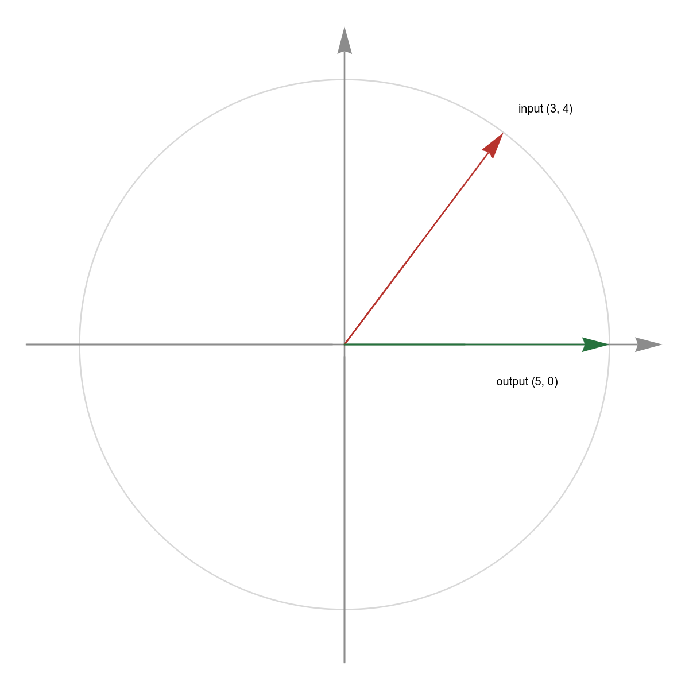
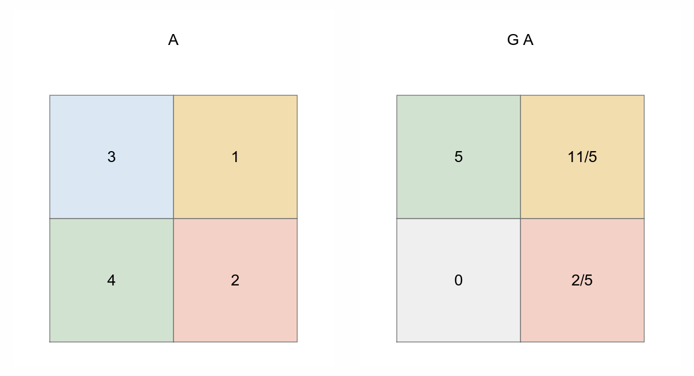

A Givens rotation turns one chosen number into zero while disturbing only two coordinates. That modest promise is exactly what QR factorization needs: repeatedly remove entries below a diagonal, preserve lengths and angles, and keep the rest of a sparse or changing matrix untouched.
Suppose a column contains two entries, \(a\) and \(b\), and the lower one is inconvenient. In QR factorization, it is inconvenient because triangular matrices have zeros below their diagonal. Rather than changing the whole vector, we want an operation that transforms
The constraint is important: it must preserve the vector's Euclidean length. Otherwise each zero we create would silently distort the least-squares problem or the numerical scale of the matrix.

We need the formula because a useful algorithm should choose its rotation from the entries it sees, not from a preselected angle. Define \(r=\sqrt{a^2+b^2}\) for \((a,b)\ne(0,0)\), then normalize the two entries:
Here \(c\) and \(s\) play the roles of cosine and sine. With the sign convention used on this page, form
Multiply it by the troublesome pair. The first row combines \(a\) and \(b\) in the direction of the vector; the second row combines them in the perpendicular direction. Those are exactly the two directions worth separating.
The lower expression cancels because the same product \(ab/r\) appears once with each sign. Other texts often use \(\begin{bmatrix}c&-s\\s&c\end{bmatrix}\); that is the transpose convention. Both are valid when the signs of \(s\) and the side of multiplication are handled consistently.
Zeroing an entry is only useful if the operation is reversible and does not amplify or shrink directions. That is why we use an orthogonal matrix: its transpose is its inverse.
Consequently, \(\lVert Gx\rVert_2=\lVert x\rVert_2\) for every two-vector \(x\). This is stronger than preserving the one pair we happen to be eliminating: it says the whole local coordinate plane is only re-expressed, not distorted.
Real matrices have more than two rows, but only two rows should participate in one elimination. To zero the entry in row \(i\) using row \(k\), embed the \(2\times2\) block into the identity matrix:
Left multiplication, \(G_{ik}A\), changes only rows \(i\) and \(k\) of \(A\). That locality is the central engineering property: all other rows are copied through unchanged. Right multiplication instead rotates two columns.
A small example exposes the mechanism better than an abstract elimination schedule. Start with
We want the \(4\) below the diagonal to become zero. The first column gives \(r=5\), \(c=3/5\), and \(s=4/5\), so
Applying \(G\) to both rows carries the same rotation across every column. The first column is the one we designed the rotation for; the second changes as the necessary, geometry-preserving consequence.
Because \(G\) is orthogonal, \(A=G^\mathsf{T}R\). Thus this one-step QR factorization has \(Q=G^\mathsf{T}\) and an upper-triangular \(R\). For a taller matrix, repeat this operation down each column until every entry below the diagonal is zero.

Both Givens and Householder transformations build QR factorizations with orthogonal operations. The choice is about the shape and lifecycle of the computation, not mathematical correctness.
| Situation | Why Givens fits | Typical alternative |
|---|---|---|
| Sparse matrices | It changes only two rows, helping avoid unnecessary fill-in when the elimination order is chosen carefully. | Householder can update an entire trailing block and may spread nonzeros. |
| Streaming or rank-one updates | A new observation can be folded into an existing triangular factor by a sequence of local zeroing operations. | Recompute a batch QR only when updates are not the dominant workflow. |
| Dense, high-throughput QR | It works, but many small rotations expose less matrix-matrix parallelism. | Blocked Householder QR usually maps better to dense BLAS hardware. |
The larger pattern is worth remembering: Givens rotations exchange broad, dense updates for precise local control.
The derivation says \(r=\sqrt{a^2+b^2}\), but direct evaluation can overflow when \(a\) and \(b\) are huge or underflow when both are tiny. A production implementation computes a scaled hypotenuse instead of squaring first.
After obtaining \(r\), derive \(c\) and \(s\) from stable ratios. Mature numerical libraries package the careful sign and scaling cases in routines such as LAPACK's \(\texttt{xLARTG}\). The special case \((a,b)=(0,0)\) needs no rotation: use \(c=1\), \(s=0\).